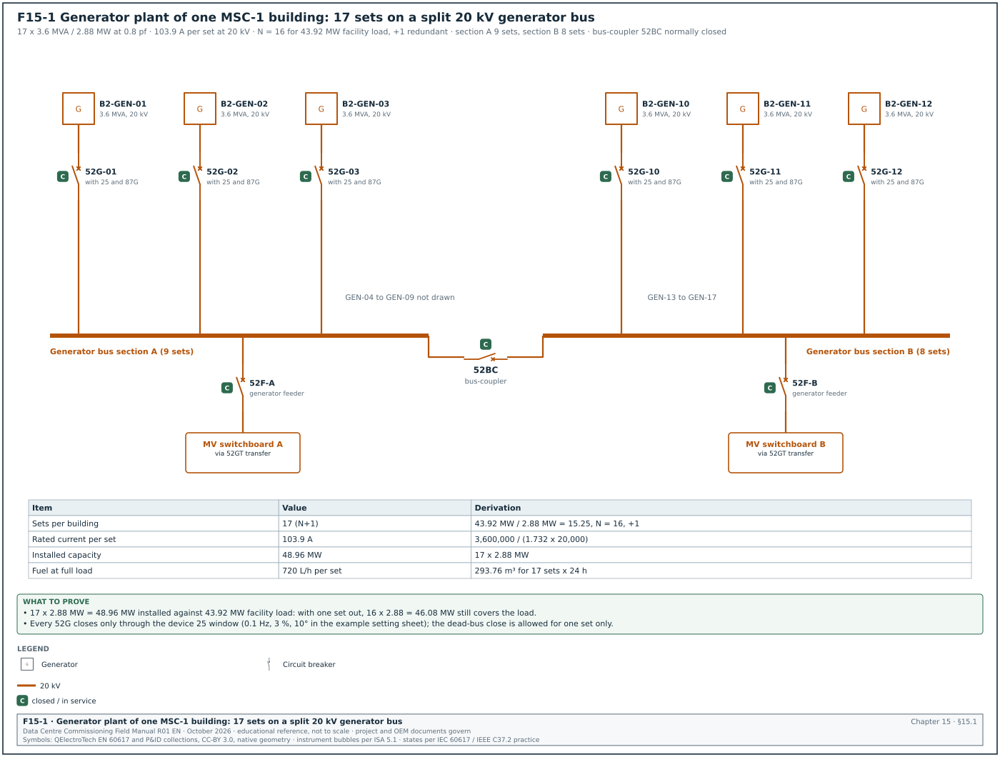
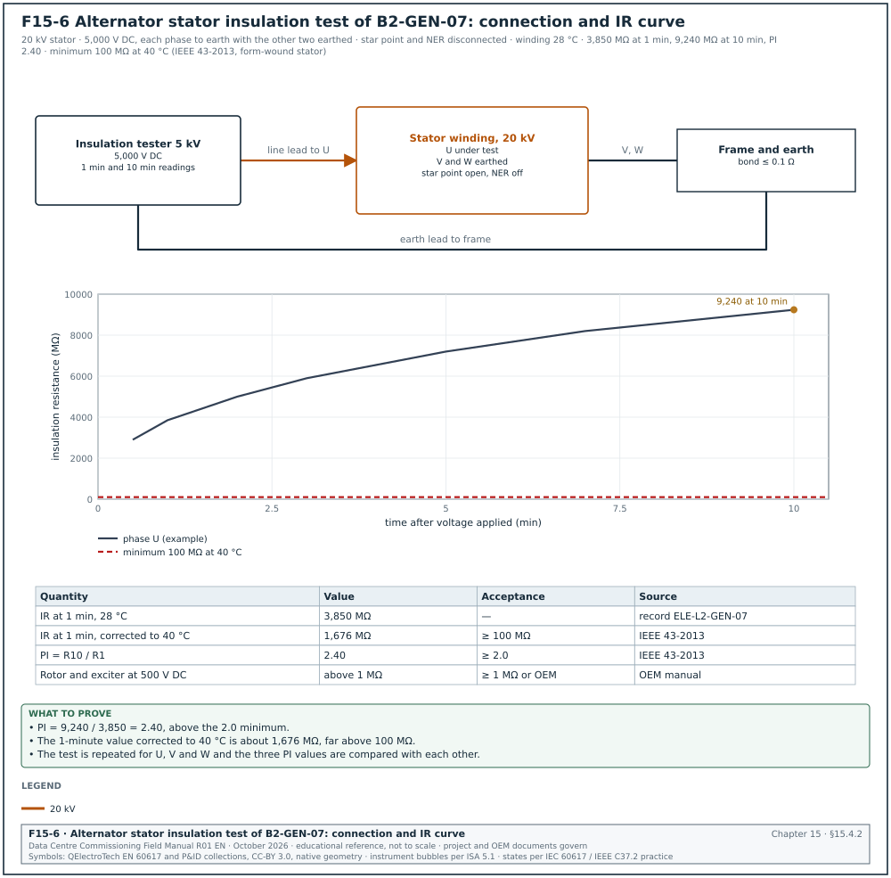
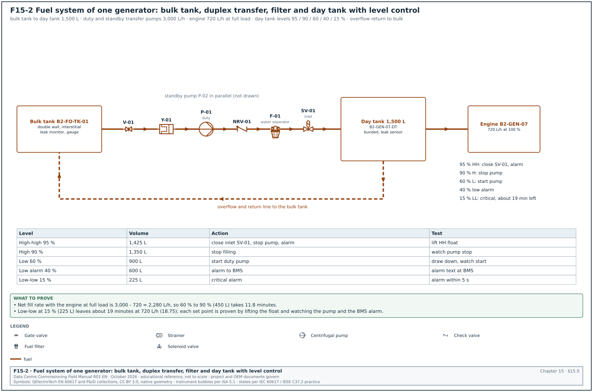
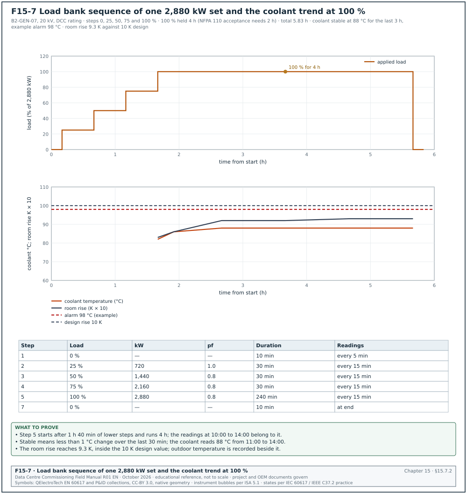
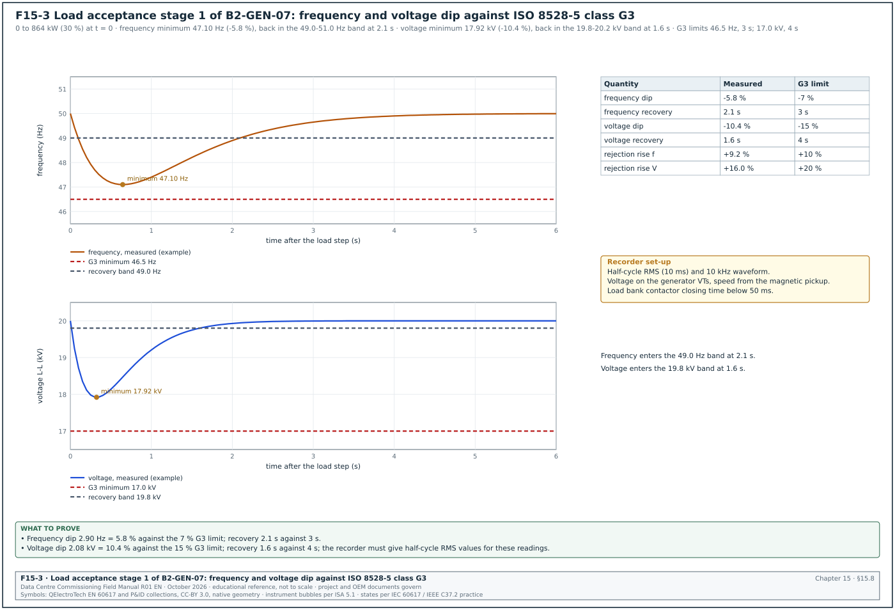
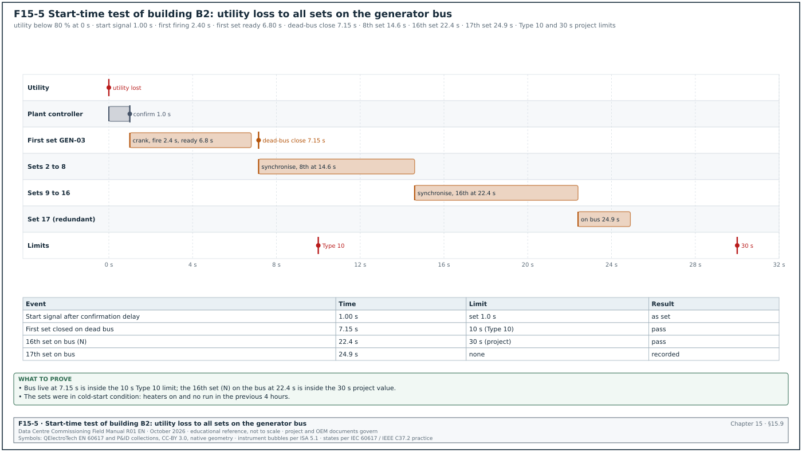
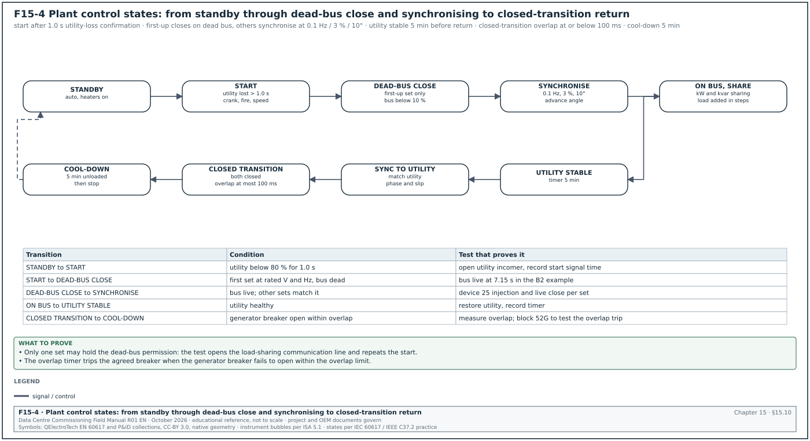
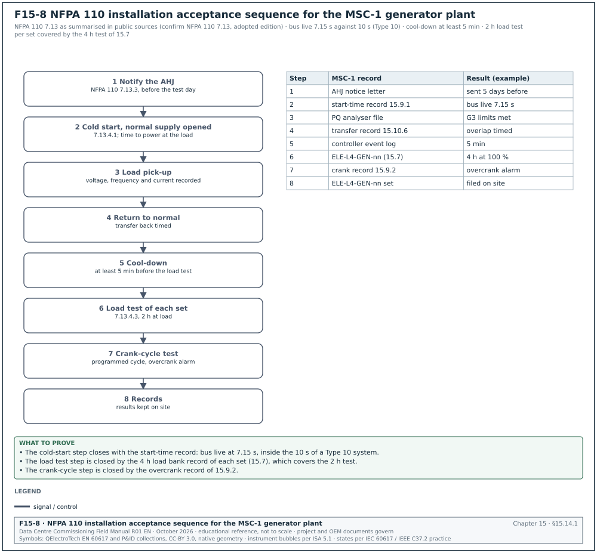

15.0Scope of this chapter
This chapter covers the standby diesel generator plant of a data-centre building. The plant is the generator sets, the fuel storage and transfer system, the medium-voltage synchronising (paralleling) switchgear, and the controls that start, synchronise, share load and transfer the building to and from the utility. The chapter gives the tests from installation (Level 2) to integrated systems testing (Level 5). For each test it gives the instrument, the applied value, the duration, the acceptance value and its source, and the record that closes the test.
- Plant description. What a standby generator plant is, why a data centre needs one, and the MSC-1 plant of 17 sets per building on a 20 kV generator bus.
- Ratings and classes. ISO 8528-1 power ratings, NFPA 110 Level, Type and Class, and the ISO 8528-5 transient performance classes G1 to G4.
- Commissioning levels. The factory test, delivery, installation, start-up, functional and integrated tests, with roles and exit records.
- Installation checks. Mechanical, exhaust, ventilation, electrical, earthing and alternator insulation tests.
- Fuel system. Bulk tanks, transfer pumps, day tanks, piping pressure test, flushing, polishing, fuel quality tests and day-tank control.
- Start-up and controller set-up. Protective shutdowns, governor and automatic voltage regulator (AVR) settings, and the settings record.
- Load bank test. Steps from 0 % to 100 % (110 % where the rating allows), durations, readings and the filled record.
- Transient performance test. ISO 8528-5 load acceptance and load rejection, with the frequency and voltage dip and recovery measured against the performance class.
- Start-time, crank and block-load tests. The NFPA 110 Type 10 start time, the crank-cycle test and the block-load test.
- Synchronising and load sharing. Synchronising limits, dead-bus closing, first-up arbitration, active and reactive load sharing, and the closed-transition return to the utility.
- Protection. Generator and paralleling protection functions and the secondary injection and trip tests.
- Emissions and noise. The site measurements and the Indonesian limits that apply.
- Communications. The generator controller Modbus map to the electrical power monitoring system (EPMS) and building management system (BMS), and the point-to-point test.
- Acceptance. The NFPA 110 acceptance sequence, the two-hour load test, the filled records, common errors, key performance indicators (KPIs) and the site checklist.
Documents and standards used: ISO 8528-1, -5 and -6 (generating sets: ratings, performance and test methods; -5 in the 2022 edition), NFPA 110 (emergency and standby power systems), NFPA 37 (stationary combustion engines), NFPA 30 (flammable and combustible liquids) and ASTM D975 (diesel fuel). The chapter also uses ISO 4406 (fluid cleanliness code), IEEE 1547 synchronisation table (used as a reference window), IEEE C37.2 device function numbers, ANSI/NETA Acceptance Testing Specifications (ATS), PUIL 2020 (SNI 0225) and Permenaker 12/2015 (K3 Listrik). It also uses the commissioning guides of Caterpillar, Cummins and MTU (Rolls-Royce Power Systems) and the controller manuals of Deep Sea Electronics (DSE), ComAp, Woodward (easYgen) and Cummins (PowerCommand).
15.1What a standby generator plant does on a data-centre campus


15.1.1Purpose of the plant
A data-centre building takes its normal supply from the utility grid through medium-voltage (MV) switchgear and transformers (chapter 13). When the utility supply fails, the uninterruptible power supply (UPS) batteries carry the information technology (IT) load for a few minutes (chapter 16). The generator plant starts during those minutes, takes over the whole building load, and runs until the utility returns. The mechanical plant (chillers, pumps, computer room air handlers and coolant distribution units) has no battery support on most designs. It stops for the seconds between the utility failure and the generator bus becoming live, and restarts on generator power.
The generator plant has three jobs:
- Start and close fast. The sets start, reach rated speed and voltage and close onto a common bus within a time the UPS batteries and the cooling thermal inertia can cover. NFPA 110 calls a system that restores power within 10 seconds a Type 10 system.
- Carry the full building load. The sets accept the restarting mechanical loads and the UPS rectifier walk-in in steps without the frequency or voltage leaving the band that the UPS rectifiers and motor drives accept.
- Run for the design duration. The fuel system stores fuel for the design run time (the NFPA 110 Class, in hours) and delivers it to every engine for that time without a single failure stopping more than one set.
15.1.2The MSC-1 generator plant
In the MSC-1 worked example, each building has an IT load of 36 MW and a facility load of 43.92 MW at a design power usage effectiveness (PUE) of 1.22. The generator plant for one building is:
| Item | MSC-1 value | Derivation |
|---|---|---|
| Generator sets per building | 17 | 43.92 MW / 2.88 MW = 15.25, rounded up to 16 (N), plus 1 redundant (N+1) |
| Set rating | 3.6 MVA, 2.88 MW at 0.8 power factor | data-centre continuous rating as defined in the original equipment manufacturer (OEM) rating definition sheet for the set model |
| Generator voltage | 20 kV, 50 Hz | direct MV alternator on the 20 kV generator bus |
| Rated current per set | 103.9 A | 3,600,000 / (√3 × 20,000) |
| Fuel consumption at full load | 720 L/h per set | about 0.25 L/kWh |
| Design run time | 24 h | owner's project requirements (OPR) |
| Bulk fuel per building | 293.76 m³ | 17 × 720 L/h × 24 h |
| Total installed capacity | 48.96 MW | 17 × 2.88 MW |
Worked example: Fuel storage against NFPA 110 5.5.3. The ledger figure of 293.76 m³ is the consumption of all 17 sets at full load for 24 hours. NFPA 110 requires the stored fuel to be 133 % of the fuel needed for the Class. If the authority having jurisdiction (AHJ) or the owner applies that rule to a Class 24 system, the storage becomes 293.76 × 1.33 = 390.7 m³ per building. With 16 sets running at the building facility load of 43.92 MW, the real consumption is 43.92 / 2.88 × 720 = 10,980 L/h, so 293.76 m³ lasts 26.8 hours. The commissioning manager records which basis the design used in the basis of design (BOD) and asks the engineer of record (EoR) to confirm it before the fuel quantity is accepted.
15.1.3Plant arrangement
Figure F15-1 shows the single-line diagram of the generator plant. Each set has its own generator circuit breaker (52G) in the synchronising switchgear. The 17 breakers connect to a 20 kV generator bus split into two sections by a bus-coupler. Feeder breakers from the generator bus supply the building MV switchboards through generator-to-utility transfer breakers. The plant control system decides which sets start, closes them onto the bus, adds load in steps and returns the building to the utility. It is a programmable logic controller (PLC) master control or the master function of the generator controllers.
| Component | Device number (IEEE C37.2) | Function |
|---|---|---|
| Generator circuit breaker | 52G | connects one set to the generator bus |
| Synchronising check relay | 25 | permits closing only when voltage, frequency and phase angle match |
| Generator protection relay | ANSI/IEEE C37.2 functions 87G (generator differential), 32 (reverse power), 40 (loss of excitation), 46 (negative-sequence current), 51V (voltage-restrained overcurrent), 59 (overvoltage), 27 (undervoltage), 81 (frequency) | protects the alternator and the engine against faults and abnormal operation |
| Bus-coupler | 52BC | splits or joins the two generator bus sections |
| Generator feeder breaker | 52F | supplies one building MV switchboard from the generator bus |
| Utility-generator transfer pair | 52U and 52GT | open-transition or closed-transition transfer between utility and generator |
| Neutral earthing resistor | NER | limits the earth-fault current on the 20 kV generator system |
15.2Ratings, NFPA 110 classification and ISO 8528-5 performance classes
15.2.1ISO 8528-1 power ratings
A generator set has a different rating for each type of duty. The commissioning manager checks that the rating on the nameplate and on the factory test report is the rating the specification asked for. The load bank test duration and the overload step depend on this rating.
| Rating | Meaning (ISO 8528-1) | Overload allowed | Typical data-centre use |
|---|---|---|---|
| Continuous operating power (COP) | constant load for unlimited hours | none | design rating on some hyperscale specifications |
| Prime rated power (PRP) | variable load for unlimited hours, average not above 70 % of PRP over 24 h | 10 % for 1 h in 12 h | older data-centre specifications |
| Limited-time running power (LTP) | constant load up to 500 h per year | none | rare |
| Emergency standby power (ESP) | variable load during a utility outage, up to 200 h per year, average 70 % | none | small sites; not accepted by most data-centre owners |
| Data-centre continuous (DCC) or data-centre power (DCP) | manufacturer rating for unlimited hours at variable or constant load in data-centre duty | per OEM | common on hyperscale projects (Caterpillar, Cummins and MTU each publish one) |
The DCC and DCP ratings are manufacturer ratings, and their exact definitions differ between manufacturers. ISO 8528-1 defines only COP, PRP, LTP and ESP. The DCC or DCP definition for the offered set is taken from the OEM rating definition sheet of that set. The Uptime Institute Tier Standard: Topology requires engine generators to be rated for unlimited run hours at the design load for Tier III and Tier IV.
15.2.2NFPA 110 Level, Type and Class
NFPA 110 classifies an emergency power supply system (EPSS) by three properties. The specification and the AHJ decide which apply.
| Property | Meaning | Values | MSC-1 value |
|---|---|---|---|
| Level | consequence of failure | Level 1: failure could cause loss of life or serious injury; Level 2: less critical | Level 2 for the data-hall load; Level 1 for life-safety loads where the local AHJ applies NFPA 110 (NFPA 110 4.4 Level definitions as quoted by Cummins, RF-15 row 23; the AHJ decides which loads are Level 1) |
| Type | maximum time for power to return to the load terminals | Type 10 = 10 s; Type 60 = 60 s; Type 120 = 120 s; Type M = manual | Type 10 for the generator bus (project requirement) |
| Class | minimum run time at rated load without refuelling, in hours | Class 0.083, 0.25, 2, 6, 48, X (X = other, set by the code or the user) | Class X = 24 h |
A Level 1 generator inside a building stands in a room with a 2-hour fire resistance rating that contains only the EPSS equipment (NFPA 110 7.2.1.1).
15.2.3ISO 8528-5 transient performance classes
ISO 8528-5 defines how a set behaves when load is suddenly added or removed. Class G1 is for loads that tolerate large variation (lighting, simple resistive loads). Class G2 is for public supply-like quality. Class G3 is for loads with high demands on frequency and voltage, which includes data-centre UPS rectifiers and variable-speed drives. Class G4 is a class whose values are agreed between the manufacturer and the customer (AMC).
| Parameter (ISO 8528-5:2022 Table 4) | G1 | G2 | G3 |
|---|---|---|---|
| Frequency droop | ≤ 8 % | ≤ 5 % | ≤ 3 % |
| Steady-state frequency band | ≤ ±2.5 % | ≤ ±1.5 % | ≤ ±0.5 % |
| Transient frequency deviation, 100 % load removed | ≤ +18 % | ≤ +12 % | ≤ +10 % |
| Transient frequency deviation, load added | ≤ −15 % | ≤ −10 % | ≤ −7 % |
| Frequency recovery time | ≤ 10 s | ≤ 5 s | ≤ 3 s |
| Related frequency tolerance band | 3.5 % | 2 % | 2 % |
| Steady-state voltage deviation | ≤ ±5 % | ≤ ±2.5 % | ≤ ±1 % |
| Transient voltage deviation, 100 % load removed | ≤ +35 % | ≤ +25 % | ≤ +20 % |
| Transient voltage deviation, load added | ≤ −25 % | ≤ −20 % | ≤ −15 % |
| Voltage recovery time | ≤ 10 s | ≤ 6 s | ≤ 4 s |
These values are taken from a manufacturer's reproduction of ISO 8528-5:2022 Table 4 (Kohler) and agree with a second summary (Avtron). One Cummins bulletin lists a different G3 voltage rise, so confirm every value against the current edition of ISO 8528-5 before it goes into a test script. For a 50 Hz, 20 kV set in class G3, the values become:
| Quantity | Limit in class G3 | Value at 50 Hz and 20 kV |
|---|---|---|
| Lowest frequency on load acceptance | −7 % | 46.5 Hz |
| Highest frequency on 100 % load rejection | +10 % | 55.0 Hz |
| Frequency recovery band | ±2 % (tolerance band) | 49.0 to 51.0 Hz |
| Frequency recovery time | 3 s | from the load step to entry into the band |
| Lowest voltage on load acceptance | −15 % | 17.0 kV |
| Highest voltage on 100 % load rejection | +20 % | 24.0 kV |
| Voltage recovery time | 4 s | from the load step to entry into the voltage band |
15.2.4Load acceptance steps and brake mean effective pressure
A modern turbocharged engine cannot accept 100 % load in one step and stay inside class G3. ISO 8528-5:2022 Figure 6 gives reference values for the largest sudden power increase as a function of the brake mean effective pressure (bmep) at declared power. The higher the bmep, the smaller the first step. A large data-centre engine with a bmep of about 25 bar needs three or four load stages to reach 100 % (read the stage sizes from Figure 6 and from the OEM transient data sheet; confirm against the current edition of ISO 8528-5).
The bmep is calculated from the declared power:
bmep (bar) = (P × nr × 1,000) / (Vd × n)
In this formula P is the declared power in kW and nr is the number of crank revolutions per working cycle (2 for a four-stroke engine). Vd is the swept volume in litres and n is the speed in revolutions per second.
Worked example: A 2.88 MW electrical set with an alternator efficiency of 96.5 % needs an engine output of 2,985 kW. With a swept volume of 95.4 L and a speed of 1,500 rpm (25 rev/s), bmep = (2,985 × 2 × 1,000) / (95.4 × 25) = 25.0 bar. At this bmep, the commissioning manager expects the OEM to declare three or four acceptance stages. The test script in 15.8 uses the four stages declared on the example OEM transient data sheet: 0 to 30 %, 30 to 55 %, 55 to 80 % and 80 to 100 %.
15.3Commissioning levels for the generator plant
15.3.1Levels, owners and exit records
| Level | Activity | Lead role | Witness | Exit record |
|---|---|---|---|---|
| L1 | Factory acceptance test (FAT) of each set and of the synchronising switchgear | OEM test engineer | commissioning authority (CxA), EoR | signed FAT report with load bank and transient results per set |
| L2 | Delivery inspection and installation checks | mechanical and electrical contractor | CxA | signed L2 checklist ELE-L2-GEN-nn per set, fuel L2 checklist MEC-L2-FUEL |
| L3 | Start-up and pre-functional checks by the OEM | OEM start-up engineer | CxA, contractor | OEM start-up report, settings record, L3 checklist ELE-L3-GEN-nn |
| L4 | Functional tests: load bank, transient, start time, synchronising, load sharing, transfer, protection | electrical contractor with OEM | CxA, owner, AHJ where required | signed L4 test scripts ELE-L4-GEN-01 to -08 |
| L5 | Integrated systems test (IST): utility failure and return with the building on load | commissioning manager | owner, operations team | IST script results, issue log entries closed |
15.3.2What blocks the next level
- L1 to L2. A set does not ship until its FAT report shows the full load run and the transient results inside the specified class. A set that failed the FAT is retested at the factory.
- L2 to L3. The OEM does not start an engine until the fuel system is flushed and its fuel sample passes (15.5). The coolant and lubricating oil must also be filled to the OEM specification, the exhaust complete, the room ventilation working and the alternator insulation resistance passed.
- L3 to L4. The load bank test does not start until the OEM start-up report is signed, all protective shutdowns are proven and the controller settings record is issued.
- L4 to L5. The integrated test does not start until every set has passed its load bank, transient and protection tests. The synchronising and load sharing tests must also pass with all sets, and the generator controller points must be proven at the EPMS and BMS.
15.3.3Factory acceptance test content
- Run at rated load. The set runs at 100 % of its rating at 0.8 power factor for the duration in the specification (4 hours in this example). Readings are taken every 15 minutes.
- Overload. Where the rating allows an overload (prime rating), the set runs at 110 % for 1 hour.
- Transient performance. Load acceptance in the declared stages and 100 % load rejection, recorded with a high-speed recorder against ISO 8528-5 class G3.
- Protective shutdowns. Low oil pressure, high coolant temperature, overspeed, overcrank and emergency stop are proven by simulation or by real trip.
- Alternator tests. Insulation resistance, winding resistance, voltage waveform and harmonic content, phase rotation.
- Switchgear FAT. Synchronising logic with simulated generator signals, protection relay injection, interlocks and the control panel input and output (I/O) list.
Worked example: FAT witness plan for 17 sets. With two FAT test cells at the factory and 1.5 days per set (4-hour run, transient test, shutdowns, paperwork), the 17 sets need 17 × 1.5 / 2 = 12.75 working days. The CxA witnesses three sets in full (the first, one from the middle of the run and the last) and reviews the other 14 reports, which gives 3 witnessed FATs and 14 reviewed reports for building B2.
15.4Installation checks (Level 2)
15.4.1Mechanical and exhaust installation
- Foundation and isolators. The set stands level within the OEM tolerance (for example 1 mm per metre) on its anti-vibration mounts. The mounts are released from their transport locks.
- Exhaust system. The exhaust has a flexible connection at the engine, supports independent of the engine, insulation where people can touch it, a rain cap or a drain, and a back-pressure test point. The design back-pressure is below the OEM limit (for example 6.7 kPa; the OEM installation manual gives the limit).
- Room ventilation. Air inlet and outlet louvres and the radiator duct are complete, and the motorised louvres open on engine start. The design air temperature rise across the room is within the OEM limit.
- Cooling system. Radiator or remote cooler filled with the OEM-approved coolant mixture. Coolant concentration checked with a refractometer.
- Lubricating oil. Filled to the dipstick full mark with the OEM grade. A sample is taken for the baseline oil analysis.
- Starting system. Batteries or air starters installed, charger working, battery voltage recorded, cranking cables sized and tight.
- Fire protection. The room fire detection and any sprinkler or water-mist system cover the set as designed (chapter 20).
15.4.2Electrical installation and alternator tests
Figure F15-6 shows the stator insulation test connection and the insulation resistance (IR) curve of set B2-GEN-07.


| Test | Instrument and accuracy | Applied value | Duration | Acceptance value | Source |
|---|---|---|---|---|---|
| Alternator stator insulation resistance (IR) | insulation tester, ±5 % accuracy, calibrated within 12 months | 5 kV DC for a 20 kV winding (each phase to earth, other phases earthed) | 1 min and 10 min | IR at 1 min corrected to 40 °C ≥ 100 MΩ (form-wound stator built after 1970); polarisation index (PI) ≥ 2.0 | IEEE 43-2013 minimum values (100 MΩ at 40 °C, PI 2.0), RF-15 row 24 |
| Rotor and exciter insulation resistance | insulation tester | 500 V DC | 1 min | ≥ 1 MΩ or OEM value | OEM manual |
| Winding resistance | micro-ohmmeter, ±0.2 % | 10 A DC | until stable | phases within 2 % of each other and of the factory value | ANSI/NETA ATS |
| Space heater | multimeter, clamp meter | supply voltage | — | current within ±10 % of nameplate | OEM manual |
| Earthing of frame and neutral earthing resistor | low-resistance ohmmeter | 10 A | — | bond resistance ≤ 0.1 Ω; NER resistance within ±10 % of nameplate | project specification |
| MV cable from alternator to 52G | per chapter 13 (VLF withstand, IR) | per chapter 13 | per chapter 13 | per chapter 13 | IEEE 400.2 |
| Phase rotation | phase rotation meter | at first run | — | same rotation as the generator bus and utility | project specification |
Worked example: Alternator IR record for set B2-GEN-07. The IR at 1 minute was 3,850 MΩ and at 10 minutes 9,240 MΩ at a winding temperature of 28 °C. PI = 9,240 / 3,850 = 2.40, above the minimum of 2.0. The IEEE 43 temperature correction to 40 °C halves the IR for every 10 °C rise. The 1-minute value at 40 °C is about 3,850 × 0.5^1.2 = 1,676 MΩ, far above the 100 MΩ minimum. The result is a pass and the record goes into ELE-L2-GEN-07.
15.4.3L2 checklist record fields
| Field | Type | Example value |
|---|---|---|
| Asset tag | text | B2-GEN-07 |
| Serial numbers (engine, alternator, controller) | text | engine SN 4ZX01234, alternator SN A1-77881, controller SN 2203-0417 |
| Rating on nameplate | text | 3,600 kVA, 2,880 kW, 0.8 pf, 20 kV, 50 Hz, DCC |
| Foundation level reading | number (mm/m) | 0.6 |
| Exhaust back-pressure (design) | number (kPa) | 5.1 |
| Coolant concentration | number (%) | 50 |
| Starting battery voltage | number (V) | 25.6 |
| IR 1 min / 10 min, PI | numbers | 3,850 MΩ / 9,240 MΩ / 2.40 |
| Open items | list | 2 (louvre actuator label missing; exhaust insulation gap at flange) |
| Signatures | name, role, date | contractor QA, CxA |
15.5Fuel system: storage, transfer, day tanks, flushing and fuel quality


15.5.1System description
Figure F15-2 shows the fuel system piping and instrumentation diagram (P&ID) for one building. Diesel is delivered by road tanker to a fill point with a spill containment box. It is stored in bulk tanks (double-wall steel tanks above ground, or underground tanks with interstitial monitoring). Duplex transfer pumps move the fuel from the bulk tanks to a day tank at each generator. A filter and water separator on the transfer line, and the engine's own filters, keep the fuel clean. A polishing skid circulates the bulk tank contents through filters and a water coalescer.
| Component | Purpose | Commissioning check |
|---|---|---|
| Fill point and spill box | tanker connection, overfill protection | overfill alarm at 90 % and shut-off valve at 95 % of tank volume (project specification values) |
| Bulk tank | stores the Class duration of fuel | tank calibration chart, level gauge, leak detection in the interstitial space |
| Transfer pumps (duty and standby) | fill the day tanks | flow, pressure, changeover on failure, run on generator power |
| Day tank | supplies one engine for a limited time | level switches, overflow return, high-level shut-off, leak detection in the bund |
| Polishing skid | removes water and particles | filter differential pressure, water-in-fuel sensor, flow |
| Leak detection | finds leaks in pipe sleeves, bunds and sumps | each sensor alarms at the fire alarm panel or BMS |
| Fuel level monitoring | shows litres and hours of run time | calibrated against the tank chart; transmitted to the BMS |
15.5.2Day-tank control levels
Each day tank has level switches or a level transmitter with set points. The values below are an example for a 1,500 L day tank, which gives 2.1 hours at 720 L/h.
| Level | Percentage of tank | Volume | Action |
|---|---|---|---|
| High-high | 95 % | 1,425 L | alarm; close the inlet solenoid valve; stop transfer pumps to this tank |
| High | 90 % | 1,350 L | stop filling |
| Low (pump start) | 60 % | 900 L | start filling |
| Low alarm | 40 % | 600 L | alarm "day tank low" to BMS |
| Low-low | 15 % | 225 L | alarm "day tank critical"; engine has about 19 minutes at full load (225 / 720 × 60 = 18.75) |
| Leak in bund | sensor | — | alarm; stop transfer pump to this tank |
15.5.3Pressure test of fuel piping
Purpose: Prove that the fuel piping does not leak before it is filled with diesel.
Steps:
- Isolate the section. The pipefitter isolates the section from tanks, pumps and engines with blank flanges or closed valves rated for the test pressure.
- Fill and vent. For a hydrostatic test, the section is filled with a test liquid compatible with diesel (the diesel itself in a closed system, or water followed by a drying procedure agreed with the OEM). For a pneumatic test, use dry air or nitrogen with the safety exclusion zone set.
- Apply the test pressure. NFPA 30-2024 27.7.1.1 requires 150 % of the maximum anticipated pressure for a hydrostatic test, or 110 % for a pneumatic test, held while every joint is inspected. Clause 27.7.1.2 sets a minimum of 34.5 kPa (5 psig) at the highest point and a hold time of at least 10 minutes. The project specification may set a longer hold.
- Read and inspect. A calibrated pressure gauge (accuracy class 0.6 or better, range about 1.5 to 2 times the test pressure) shows no pressure drop that cannot be explained by temperature. Every joint is inspected; for a pneumatic test, joints are checked with leak detection fluid.
- Record. The record shows the section, the test medium, the pressure, the start and end readings, the temperature and the signatures.
Acceptance: No visible leak and no unexplained pressure drop during the hold period.
Worked example: Transfer pump discharge header B2-FO-HDR-01. The pump dead-head pressure is 6.0 bar, so the maximum anticipated pressure is 6.0 bar and the hydrostatic test pressure is 1.5 × 6.0 = 9.0 bar. The gauge has a range of 0 to 16 bar, class 0.6 (±0.1 bar). The section held 9.0 bar to 8.98 bar over 30 minutes while the pipe temperature fell 0.4 °C. The reading change of 0.02 bar is below the gauge accuracy, so the test passes.
15.5.4Flushing the fuel system
New fuel piping contains welding slag, mill scale, cutting oil and dust. If this debris reaches the engine, it blocks the filters within hours or damages the high-pressure injection pump.
- Prepare the flush loop. The contractor connects a temporary flushing rig (pump, filter of 10 µm or finer, and bypass hoses) so that the flushing fluid bypasses the day tanks, the engine and the polishing skid. The engine fuel connections are capped.
- Set the flow. The rig circulates at a velocity that gives turbulent flow, commonly at least 1.5 times the design velocity. The project flushing specification states the velocity for the project.
- Circulate and change filters. Filters are changed when the differential pressure reaches the manufacturer's limit. Each change is recorded.
- Sample. After at least 4 hours of circulation with no filter change, the contractor takes a sample at the end of the loop in a clean bottle.
- Test the sample. A particle counter or a laboratory reports the cleanliness to ISO 4406.
- Reinstate. When the sample passes, the contractor removes the temporary connections, fits the permanent filters and records the final configuration.
Acceptance: Cleanliness at or better than the engine OEM target. Caterpillar publishes ISO 18/16/13 as the cleanliness of fuel delivered to engines with high-pressure common-rail systems. The OEM fuel recommendations for the engine model give the target that applies.
15.5.5Fuel quality tests on delivery and before acceptance
| Property | Test method | Acceptance value | Source |
|---|---|---|---|
| Water and sediment | ASTM D2709 | ≤ 0.05 % by volume | ASTM D975 Table 1, water and sediment row (No. 1-D and No. 2-D grades; ALS Global summary, RF-15 row 28) |
| Particle cleanliness | ISO 4406 particle counter | ≤ 18/16/13 at the engine | OEM fuel recommendation |
| Water content | ASTM D6304 (Karl Fischer) | ≤ 200 mg/kg (common project value) | project specification |
| Microbial contamination | ASTM D6469 guidance, field test kit | negative or below the kit's low threshold | project specification |
| Cetane number | ASTM D613 or calculated index ASTM D976 | ≥ the national fuel specification value | Indonesian fuel specification (Dirjen Migas) |
| Sulphur | ASTM D5453 | per the national specification for the grade | Indonesian fuel specification |
| Biodiesel (FAME) content | EN 14078 | as declared by the supplier | national blend mandate |
Indonesian automotive diesel contains fatty acid methyl ester (FAME) under the national biodiesel mandate (B35 from 2023 and B40 from 2025; confirm the current blend against the Ministry of Energy and Mineral Resources (ESDM) ministerial decree in force). FAME absorbs water and supports microbial growth. Fuel stored for a 24-hour reserve may sit for years, so it needs a polishing routine and quarterly sampling. The commissioning manager asks the engine OEM to confirm in writing that the blend is accepted for the warranty.
15.5.6Transfer system functional test
Purpose: Prove that every day tank is refilled automatically under normal and failure conditions.
Steps:
- Normal fill. The technician draws the day tank of B2-GEN-07 down to 60 % by running the engine or draining to a bulk tank. The duty transfer pump starts at 60 % and stops at 90 %. The fill time is recorded.
- Pump failure. The technician trips the duty pump. The standby pump starts within the set delay (example 10 s) and an alarm reaches the BMS.
- High-high level. The technician lifts the high-high float. The inlet solenoid valve closes and the alarm appears at the BMS within 5 s.
- Leak detection. The technician wets each leak sensor in the day-tank bund and the pipe sleeves. Each sensor alarms with the correct tag.
- Generator power. With the utility supply switched off and the building on generators (L5), the transfer pumps run from the generator-backed supply.
Records: Fuel transfer test record MEC-L4-FUEL-01 with levels, times, alarms received and signatures.
Worked example: Fill time check. The duty pump delivers 3,000 L/h. Filling from 60 % (900 L) to 90 % (1,350 L) takes 450 L. With the engine at full load the net rate is 3,000 − 720 = 2,280 L/h, so the fill takes 11.8 minutes. A measured fill time of 21 minutes means the pump delivers only about 2,000 L/h. The technician checks the suction strainer and the pump relief valve before the test is repeated.
15.6Start-up and controller set-up (Level 3)
15.6.1First start sequence
Owner: OEM start-up engineer, with the electrical contractor and the CxA present.
Steps:
- Pre-start inspection. The OEM start-up engineer checks oil, coolant and fuel levels, belt tension, air filter restriction indicator, exhaust connections and that no tools are left in the enclosure. Time limit: 1 hour per set.
- Prime and crank. The fuel system is primed. The engine is cranked with the fuel shut off (where the OEM allows) to build oil pressure before the first firing.
- First start at no load. The engine starts in manual mode and runs at idle, then at rated speed. The engineer records oil pressure, coolant temperature, speed and battery charging current every 2 minutes for the first 15 minutes.
- Leak and vibration walk-down. The contractor walks the set for fuel, oil, coolant and exhaust leaks. Vibration is measured on the engine and alternator bearings.
- Alternator excitation. The AVR builds voltage. The engineer records the no-load voltage on each phase, the phase rotation and the frequency.
- Protective shutdown tests. Each shutdown is proven (15.6.2).
- Settings record. The engineer issues the controller settings record (15.6.4).
15.6.2Protective shutdown tests
| Shutdown or alarm | Test method | Acceptance value (example; OEM value governs) | Record |
|---|---|---|---|
| Overspeed | raise speed set point in test mode, or simulate the speed signal | shutdown at 115 % of rated speed (1,725 rpm at 1,500 rpm rated) | trip speed and time |
| Low lubricating oil pressure | drain the sensor line to atmosphere through a test valve, or simulate the sensor | pre-alarm then shutdown at the OEM pressure | pressure at trip |
| High coolant temperature | simulate the sensor with a calibrated resistance or current source | pre-alarm then shutdown at the OEM temperature | temperature at trip |
| Low coolant level | lower the float or disconnect the probe | alarm or shutdown per OEM | yes or no |
| Overcrank (fail to start) | block the fuel supply in test mode | shutdown after the set crank cycles | number of cycles and time |
| Emergency stop (local and remote) | press each button | engine stops, 52G opens, alarm at BMS and EPMS | stop time |
| Fuel leak in base tank or enclosure | wet the sensor | alarm; shutdown where specified | yes or no |
| Fire alarm interface | signal from the fire alarm control panel | action as in the cause-and-effect matrix (chapter 20) | yes or no |
NFPA 110 requires the Level 1 controller to show visual and audible alarms for low oil pressure, high coolant temperature, overspeed, overcrank and other conditions listed in its safety indications and shutdowns table (Table 5.6.5.4 in NFPA 110-2022, the edition quoted in the public input report for the 2025 edition; confirm the table number in NFPA 110-2025).
15.6.3Governor and AVR set-up
The governor holds the engine speed (and so the frequency). The AVR holds the alternator output voltage. Both have proportional, integral and derivative (PID) gains that the OEM start-up engineer tunes during start-up so that the transient test in 15.8 passes.
- Speed set point. 1,500 rpm for 50 Hz on a four-pole alternator. In isochronous mode the frequency returns to exactly 50.0 Hz after a load change.
- Droop setting. For paralleled sets that share load through the controllers' load-sharing lines, the governors run isochronous with load sharing. Where droop is used as a back-up mode, set the droop at 3 % or less. ISO 8528-5 class G3 limits frequency droop to ≤ 3 % (table in 15.2.3; the OEM setting guide gives the governor setting).
- Voltage set point. 20.0 kV. Voltage droop for reactive sharing, where used, at about 4 % at full reactive load (OEM value).
- Volts-per-hertz (V/Hz) roll-off. The AVR reduces the voltage when the frequency falls below a knee point (for example 48 Hz) so that the engine recovers speed faster after a large step. This setting changes the voltage dip in the transient test and must appear in the settings record.
- Gains. The engineer starts from the OEM default gains, steps 25 % load on and off, and adjusts until the recovery is fast with no more than one overshoot.
15.6.4Controller settings record fields
| Field | Type | Example value |
|---|---|---|
| Controller model and firmware | text | Woodward easYgen-3500XT, firmware 1.24 (example) |
| Rated speed, frequency, voltage | numbers | 1,500 rpm, 50 Hz, 20.0 kV |
| Governor mode and gains | text, numbers | isochronous load sharing; P 8.0, I 2.5, D 0.2 |
| AVR gains and V/Hz knee | numbers | P 4.0, I 1.2; knee 48.0 Hz, slope 1.0 per unit |
| Synchronising window | numbers | ΔV ≤ 3 %, Δf ≤ 0.1 Hz, Δφ ≤ 10°, breaker closing time 80 ms |
| Load sharing mode | text | digital bus (CAN) between controllers |
| Protection settings | table reference | relay setting sheet B2-GEN-07-PS rev 2 |
| Modbus address and baud rate or IP address | text | 10.21.10.57, unit ID 1 |
| Signature | name, date | OEM start-up engineer, CxA |
The settings record is controlled like a drawing. Any change after the L4 tests needs a new revision and a retest of the affected function.
15.7Load bank test
15.7.1Purpose and set-up
Purpose: Prove that each set carries its rated load for the specified time with stable frequency, voltage, temperatures and pressures. Prove also that the cooling system and room ventilation hold the engine within limits at full load.
Inputs: signed L3 start-up report, settings record, fuel day tank full, load bank connected, test script ELE-L4-GEN-01.
| Instrument | Accuracy or class | Connection | Purpose |
|---|---|---|---|
| Power quality analyser (for example Fluke 1760, Hioki PQ3198 or equal) | IEC 61000-4-30 Class A, calibrated within 12 months | on the generator VTs and CTs or on the load bank metering | kW, kvar, pf, V, A, Hz, harmonics, recorded every 1 s |
| Load bank metering | ±1 % | at the load bank | applied load cross-check |
| Infrared camera | ±2 °C | handheld | terminations, breaker, alternator terminal box |
| Sound level meter | IEC 61672 Class 1 | 1 m and 7 m from the enclosure | noise check (15.12) |
| Exhaust gas analyser (where emissions are measured) | per manufacturer | exhaust test port | NOx, carbon monoxide (CO), O2, smoke (15.12) |
| Controller readings | controller accuracy | screen or Modbus | oil pressure, coolant temperature, exhaust temperature |
On MSC-1 a 20 kV resistive and reactive load bank of 3.0 MW and 2.25 Mvar is connected to a spare feeder breaker of the generator bus, or to a load bank connection cabinet. When only low-voltage load banks are available, a temporary 20/0.415 kV transformer of at least 3.6 MVA is used. Its losses are subtracted from the generator output.
15.7.2Load steps and durations
The table gives a common data-centre load bank sequence, and Figure F15-7 plots it with the coolant trend of the 100 % step. The specification governs; some hyperscale specifications ask for 4 hours at 100 % and 1 hour at 110 % only where the rating allows overload.


| Step | Load (% of kW rating) | kW on MSC-1 set | Power factor | Duration | Readings |
|---|---|---|---|---|---|
| 1 | 0 % (warm-up) | 0 | — | 10 min | every 5 min |
| 2 | 25 % | 720 | 1.0 | 30 min | every 15 min |
| 3 | 50 % | 1,440 | 0.8 | 30 min | every 15 min |
| 4 | 75 % | 2,160 | 0.8 | 30 min | every 15 min |
| 5 | 100 % | 2,880 | 0.8 | 4 h (2 h minimum per NFPA 110 acceptance) | every 15 min |
| 6 | 110 % (prime rating only) | 3,168 | 0.8 | 1 h | every 15 min |
| 7 | cool-down at 0 % | 0 | — | 5 to 10 min | at end |
15.7.3Readings taken at each interval
- Electrical. Voltage on each phase, current on each phase, kW, kvar, power factor and frequency.
- Engine. Oil pressure, coolant temperature at engine outlet, exhaust temperature per cylinder bank, charge air temperature and pressure, fuel pressure.
- Room. Air temperature at the radiator inlet and at the room outlet louvre; this proves the room ventilation design.
- Alternator. Winding temperature from the resistance temperature detectors (RTDs), bearing temperature.
- Fuel. Day tank level and transfer pump status.
- Observations. Leaks, abnormal noise, vibration, smoke colour.
15.7.4Acceptance criteria
- Frequency. Steady-state frequency within ±0.5 % of 50 Hz (49.75 to 50.25 Hz) at every load (ISO 8528-5 class G3 steady-state band).
- Voltage. Steady-state voltage within ±1 % of 20.0 kV (19.8 to 20.2 kV) (ISO 8528-5:2022 class G3 steady-state voltage deviation, Kohler white paper, RF-15 row 7).
- Temperatures. Coolant, oil and alternator winding temperatures stable (change less than 1 °C over the last 30 minutes) and below the OEM alarm values.
- Room temperature rise. Within the design value (for example 10 K between room inlet and radiator inlet).
- No leaks, no alarms. No fuel, oil or coolant leaks; no controller alarms.
- Voltage unbalance. ≤ 1 % between phases (confirm against the voltage unbalance row of ISO 8528-5:2022 Table 4).
Worked example: Filled load bank record for B2-GEN-07, step 5 (100 %).
| Time | kW | kvar | pf | V L-L (kV) | Hz | Coolant (°C) | Oil (kPa) | Exhaust (°C) | Room in/out (°C) |
|---|---|---|---|---|---|---|---|---|---|
| 10:00 | 2,884 | 2,158 | 0.80 | 20.04 | 50.01 | 82 | 465 | 498 | 31.5 / 39.8 |
| 10:15 | 2,881 | 2,161 | 0.80 | 20.02 | 50.00 | 86 | 462 | 506 | 31.8 / 40.4 |
| 11:00 | 2,879 | 2,160 | 0.80 | 20.03 | 50.00 | 88 | 460 | 512 | 32.4 / 41.6 |
| 12:00 | 2,882 | 2,159 | 0.80 | 20.02 | 49.99 | 88 | 460 | 513 | 33.1 / 42.3 |
| 13:00 | 2,880 | 2,160 | 0.80 | 20.03 | 50.00 | 88 | 459 | 513 | 33.6 / 42.9 |
| 14:00 | 2,881 | 2,160 | 0.80 | 20.02 | 50.00 | 88 | 459 | 514 | 33.9 / 43.2 |
The frequency stayed between 49.99 and 50.01 Hz, inside ±0.25 Hz. The voltage stayed between 20.02 and 20.04 kV, inside ±0.2 kV. The coolant temperature was stable at 88 °C for the last 3 hours, below the example alarm value of 98 °C. The room temperature rise was 43.2 − 33.9 = 9.3 K, inside the 10 K design value. The outdoor temperature rose during the afternoon. The commissioning manager records the outdoor temperature beside the room readings and asks the EoR whether the 10 K rise still holds at the 34 °C design dry bulb.
15.7.5Common errors in load bank tests
- Unity power factor only. A resistive-only load bank does not load the alternator to its rated kVA. The alternator heating and the AVR response at 0.8 pf are not proven. Use a resistive-reactive load bank or state the gap in the report.
- Load bank on the wrong side of the meter. Readings taken at the load bank include the cable and transformer losses. The analyser connects on the generator side.
- Enclosure doors left open. The test runs with the enclosure doors open, so the ventilation result is better than in service. The doors stay closed during step 5.
- Short 100 % duration. Temperatures have not stabilised. Stabilisation is a change of less than 1 °C in 30 minutes.
- Fuel day tank isolated. The day tank is bypassed with a temporary drum, so the transfer system is not proven under real consumption.
15.8Transient performance test (ISO 8528-5)


15.8.1Purpose
Purpose: Prove that the set meets the ISO 8528-5 performance class in the specification (G3 on MSC-1) when load is added in the declared stages and when 100 % load is rejected.
15.8.2Instrument and set-up
- Recorder. A power quality analyser or a transient recorder that records the root mean square (RMS) voltage and frequency at least every half cycle (10 ms at 50 Hz) and the waveform at 10 kHz or more. Calibration within 12 months.
- Connection. On the generator voltage transformer (VT) secondaries (phase-to-phase voltage) and on one current transformer (CT) for the current. A speed signal from the magnetic pickup gives the engine speed.
- Load. The load bank is set to switch the declared stages in one step each, with contactor closing time below 50 ms.
- Initial state. The set runs at no load (for the first stage) at rated speed and voltage, warmed up to normal coolant temperature.
15.8.3Steps
- Stage 1. Apply 0 to 30 % (864 kW) in one step. Record for 15 s.
- Stage 2. After stabilisation, apply 30 to 55 % (from 864 to 1,584 kW).
- Stage 3. Apply 55 to 80 % (from 1,584 to 2,304 kW).
- Stage 4. Apply 80 to 100 % (from 2,304 to 2,880 kW).
- Rejection. At 100 % and stable, remove 100 % in one step. Record for 15 s.
- Repeat. Repeat the full sequence once to show the result repeats.
- Read the results. For each step, read the minimum or maximum frequency, the minimum or maximum voltage, and the time from the step until the frequency and the voltage enter their recovery bands and stay there.
15.8.4Acceptance and filled record
Acceptance: Each step meets the class G3 values in 15.2.3 (ISO 8528-5:2022 Table 4 as reproduced by Kohler, RF-15 rows 4 to 9). The frequency limits are dip ≤ 7 %, rise ≤ 10 % and recovery ≤ 3 s. The voltage limits are dip ≤ 15 %, rise ≤ 20 % and recovery ≤ 4 s. The project specification may set tighter values and governs.
Worked example: Transient test record for B2-GEN-07 (Figure F15-3 plots stage 1).
| Step | kW change | Minimum or maximum frequency | Deviation | Recovery time | Minimum or maximum voltage | Deviation | Recovery time | Result |
|---|---|---|---|---|---|---|---|---|
| Stage 1 | 0 → 864 | 47.10 Hz | −5.8 % | 2.1 s | 17.92 kV | −10.4 % | 1.6 s | pass |
| Stage 2 | 864 → 1,584 | 47.65 Hz | −4.7 % | 1.8 s | 18.30 kV | −8.5 % | 1.3 s | pass |
| Stage 3 | 1,584 → 2,304 | 47.55 Hz | −4.9 % | 1.9 s | 18.24 kV | −8.8 % | 1.4 s | pass |
| Stage 4 | 2,304 → 2,880 | 48.20 Hz | −3.6 % | 1.4 s | 18.70 kV | −6.5 % | 1.0 s | pass |
| Rejection | 2,880 → 0 | 54.60 Hz | +9.2 % | 2.6 s | 23.20 kV | +16.0 % | 2.2 s | pass |
The rejection result is close to the G3 limit (+9.2 % against +10 %). The commissioning manager records the margin of 0.8 percentage points. The commissioning manager asks the OEM whether the governor gains can be improved before the synchronised plant test, because a 100 % rejection of a single set happens in service when its breaker trips.
15.8.5What the UPS and the drives need from the generator
The ISO class is a generic class. The UPS rectifier and the chiller drives have their own input tolerances, and the generator must stay inside both.
| Load | Typical input tolerance (load OEM data sheet governs) | Effect if exceeded |
|---|---|---|
| Double-conversion UPS rectifier | rectifier input accepts a wide frequency range; the bypass synchronisation window is set narrower (±2 % or ±3 %); slew rate limit about 1 Hz/s | UPS stays on battery or loses bypass synchronism |
| Chiller variable-speed drive | voltage −15 % to +10 %; frequency ±5 % | drive trips on undervoltage and restarts after a delay, adding minutes of cooling loss |
| Pump and fan drives | voltage −15 % to +10 % | trip and restart |
| Lighting and controls | wide | no effect |
The UPS frequency window and slew rate are set in the UPS settings record (chapter 16). If the UPS synchronisation window is too narrow, the UPS stays unsynchronised with the generator after a load step, and a transfer to bypass during that time would be a break transfer. The commissioning manager checks the two settings records side by side.
15.9Start-time, crank-cycle and block-load tests


15.9.1Start-time test (NFPA 110 Type 10)
Purpose: Prove that the plant restores power to the generator bus within the Type time after a utility failure.
Inputs: The power quality analyser records the utility incoming voltage, the generator bus voltage and the breaker status contacts with a 1 ms time resolution. The sets are at their normal standby condition: jacket water heaters on, coolant at the heater temperature, no prior run in the last 4 hours (cold start condition of NFPA 110).
Steps:
- Simulate the failure. Open the utility incoming breaker, or remove the utility voltage sensing to the plant controller. In a new unoccupied building NFPA 110 uses the opening of the normal supply breakers.
- Record the sequence. Record the time of utility loss, start signal, crank, engine firing, rated speed, rated voltage, first breaker closed onto the dead bus, and each further set synchronised.
- Compare. Compare the time to bus live (first set closed) and the time to all required sets on the bus with the specification.
Acceptance: For a Type 10 system, the load terminals have power within 10 s of the failure. On MSC-1 the project requirement is generator bus live within 10 s and all 16 required sets on the bus within 30 s (example project values stated in the OPR).
Worked example: Start-time record of building B2.
| Event | Time from utility loss |
|---|---|
| Utility voltage below 80 % | 0.00 s |
| Start signal after 1.0 s confirmation delay | 1.00 s |
| First engine firing | 2.40 s |
| First set at rated speed and voltage | 6.80 s |
| First 52G closed on dead bus (B2-GEN-03) | 7.15 s |
| 8th set synchronised | 14.6 s |
| 16th set synchronised | 22.4 s |
| 17th set synchronised | 24.9 s |
Figure F15-5 shows the same record as a timeline. The bus was live at 7.15 s, inside 10 s, and the 16th set was on the bus at 22.4 s, inside the 30 s project value.
15.9.2Crank-cycle test
Purpose: Prove that the starting system makes the specified number of crank attempts and then signals overcrank.
Steps:
- Block fuel. In test mode, the OEM start-up engineer disables the fuel supply so that the engine cannot fire.
- Initiate start. The controller cranks through its programmed cycle. NFPA 110 sets cycle cranking as a crank period of about 15 s followed by a rest of about 15 s. The cranking limiter time-out is 75 s for three cycles (NFPA 110-2022 5.6.4.2.1 and Table 5.6.4.2, the text quoted in the public input report for the 2025 edition; confirm that NFPA 110-2025 keeps 5.6.4.2.1 unchanged). Some battery sizing documents assume six cycles, so the project specification states the number.
- Read the battery. A recorder on the starting battery shows the voltage during cranking. The voltage stays above the OEM minimum (for example about 18 V during the crank for a 24 V system).
- Overcrank alarm. At the end of the cycle the controller shows "overcrank" and sends the alarm to the BMS.
- Restore and start. Fuel is restored and the engine starts on the same battery.
Acceptance: Programmed crank and rest periods within ±1 s, overcrank alarm received, engine starts on the same battery after the test.
15.9.3Block-load test
Purpose: Prove that the plant accepts the real building load as it is applied in service. On a data centre the real load is applied by the restart of the mechanical plant and the UPS rectifier walk-in.
- Define the block. The EoR gives the largest load step in the load-add sequence. On MSC-1 the hall step is 7.2 MW per hall (from the ledger), applied across the paralleled sets on the bus.
- Share the step. With 17 sets on the bus, each set sees 7.2 / 17 = 0.42 MW, which is 14.7 % of its rating. With only the 16 required sets, each sees 0.45 MW (15.6 %).
- Apply with load banks. The block is simulated with load banks switched in one step on the bus before the building load is used.
- Measure. Record bus frequency and voltage as in 15.8.
Acceptance: Bus frequency and voltage stay inside the G3 limits for the step, and no set trips on reverse power or overload during the transient.
15.10Synchronising, load sharing and transfer


15.10.1How synchronising works
A set can be connected to a live bus only when its voltage, frequency and phase angle match the bus. If the breaker closes with a large phase angle error, a large current flows between the set and the bus. The shaft then receives a torque shock that can damage the coupling or the alternator.
- Voltage match. The AVR adjusts the set voltage to the bus voltage.
- Frequency match. The governor runs the set slightly faster than the bus (positive slip, for example +0.05 Hz) so that the set picks up a little load when it closes and does not trip on reverse power.
- Phase match. As the slip moves the phase angle through zero, the synchroniser sends the close command early by the breaker closing time so that the contacts touch at zero degrees.
- Check. An independent sync-check relay (device 25) permits the close only inside the window.
15.10.2Synchronising window
The IEEE 1547 synchronisation table for distributed generation gives a reference window by unit size. A 3.6 MVA set falls in the 1,500 to 10,000 kVA band.
| Aggregate rating | Frequency difference | Voltage difference | Phase angle difference |
|---|---|---|---|
| 0 to 500 kVA | 0.3 Hz | 10 % | 20° |
| 500 to 1,500 kVA | 0.2 Hz | 5 % | 15° |
| 1,500 to 10,000 kVA | 0.1 Hz | 3 % | 10° |
The table is in IEEE 1547-2003 (and carried into later editions; confirm against IEEE 1547-2018). It is written for connection to a utility system, but generator OEMs and switchgear designers commonly use the same values for the paralleling switchgear. The project protection setting sheet governs.
15.10.3Dead-bus closing and first-up arbitration
When the utility fails, the generator bus is dead. The first set to reach rated voltage and frequency closes onto the dead bus without synchronising. Only one set may close on the dead bus; a second set closing at the same moment would connect two unsynchronised sets.
- Arbitration. The controllers share a "dead-bus closing" permission over the load-sharing communication line or a hardwired permissive. The first set to request receives the permission and the others wait.
- Failure case. If the communication line fails, the logic must still allow only one dead-bus closure (for example a hardwired first-up relay). This is tested by opening the communication line before a start.
- Dead-bus check. The controller confirms that the bus voltage is below the dead-bus threshold (for example 10 % of rated) before closing.
Some plants use "random access paralleling" or excitation-off paralleling: all sets close their breakers at standstill or at low speed with the excitation off, then excite together. This brings the bus live faster, and the commissioning manager asks for the OEM description and tests it as a separate mode.
15.10.4Synchronising test procedure
Steps:
- Test the check relay. Inject secondary voltages into the device 25 relay from a three-phase test set (for example Omicron CMC or Megger SMRT). Vary the angle, slip and voltage, and record the boundary of the close permission. Acceptance: boundary within ±1° and ±0.01 Hz of the setting.
- Check the closing time. Measure the breaker closing time with a breaker timer; it must equal the value set in the synchroniser (example 80 ms ±10 ms).
- Synchroscope test with the breaker racked to test. Run the set, let the synchroniser bring it into sync, and record the angle at the close command against the bus. Acceptance: close command at the advance angle that corresponds to the closing time and slip.
- Live close. Close the breaker on the live bus with the recorder on the current. Acceptance: inrush current at close below 10 % of rated current (example project value), no reverse power trip.
- Repeat for every set. Each of the 17 sets closes three times; the recorded phase angle at contact touch is within ±10°.
Worked example: Advance angle. With a slip of +0.05 Hz, the phase angle moves 0.05 × 360 = 18° per second. With a breaker closing time of 80 ms, the angle moves 18 × 0.080 = 1.44° during the closing time. The synchroniser sends the close command at −1.44° so that the contacts touch at 0°. If the closing time were wrongly set to 40 ms, contact would occur at +0.72°, still inside the window. The error matters at higher slip, so the test also runs at 0.1 Hz slip (2.88° at 80 ms).
15.10.5Load sharing test
Purpose: Prove that the sets share the active power (kW) and the reactive power (kvar) in proportion to their ratings.
Steps:
- All sets on the bus. All 17 sets on the bus with the load bank at 50 % and then 90 % of the plant rating.
- Read each set. Record kW and kvar of each set from the analyser or the controller.
- Calculate the error. Error = (set kW − average kW) / set rating × 100 %.
- Step changes. Add and remove 25 % of plant load and check that sharing returns within 10 s.
- Remove one set. Trip one set; the others pick up its load without overload, and the sharing returns.
Acceptance: Active power sharing within ±5 % of the set rating between 80 % and 100 % load and ±10 % between 20 % and 80 %; reactive sharing within ±10 % (ISO 8528-5:2022 Table 4 sharing values for G2 and G3, Kohler white paper, RF-15 row 10; the project value applies where tighter).
Worked example: At a plant load of 30.0 MW with 17 sets, the average is 1,765 kW per set. Set B2-GEN-11 reads 1,890 kW, an error of (1,890 − 1,765) / 2,880 = +4.3 %. The load is 61 % of rating, where the limit is ±10 %, so the set passes. Set B2-GEN-04 reads 1,560 kvar against an average of 1,324 kvar, an error of (1,560 − 1,324) / 2,160 = +10.9 % of the rated kvar, which fails the ±10 % reactive limit. The OEM start-up engineer checks the AVR reactive droop or the reactive sharing line of B2-GEN-04 before the test is repeated.
15.10.6Transfer back to utility (closed transition)
When the utility returns, the building is transferred back. In an open transition, the generator feeder opens and the utility breaker closes, with a short break that the UPS carries. In a closed transition, the generator bus is synchronised with the utility, both breakers are closed for a short overlap, and then the generator breaker opens.
- Utility stable timer. The controller waits for the utility to be stable for the set time (example 5 minutes) before starting the return.
- Synchronise to utility. The plant adjusts frequency and phase so the generator bus matches the utility.
- Close and overlap. The utility breaker closes; the plant ramps its load down (soft transfer) or opens immediately (fast closed transition). The utility interconnection agreement limits the overlap for a fast closed transition, for example to 100 ms or less. The PLN (state electricity company) connection agreement and the switchgear OEM manual state the limit for the project.
- Failure to separate. If the generator breaker does not open within the overlap limit, a separate timer trips it or the utility breaker (device 62 or a dedicated overlap timer). This is tested.
- Cool-down. The sets run unloaded for the cool-down time (example 5 minutes) and stop.
Acceptance: The overlap time measured with a breaker timer or the recorder is ≤ the agreed value. The overlap timer trips the correct breaker when the generator breaker is blocked. The UPS stays on normal mode throughout.
Figure F15-4 shows the plant states from standby to return to utility.
15.11Generator and paralleling protection
15.11.1Protection functions
| Device | Function | Example setting (from the protection setting study; project values govern) | Test method |
|---|---|---|---|
| 87G | generator differential | 10 % of rated current, slope 20 % | secondary injection on both CT sets, in-zone and out-of-zone |
| 32 | reverse power | 5 % of rated kW (144 kW), 5 s | inject reverse power; live test by reducing fuel set point |
| 40 | loss of excitation | per the alternator capability curve | inject offset mho characteristic |
| 46 | negative-sequence current | I2 continuous 8 %, I2²t = 20 | inject unbalanced current |
| 51V | voltage-restrained overcurrent | pickup 1.5 × rated current at rated voltage | inject current and voltage |
| 59 / 27 | over- and undervoltage | 110 % for 2 s; 85 % for 3 s | inject voltage |
| 81O / 81U | over- and underfrequency | 52.5 Hz for 1 s; 47.5 Hz for 5 s | inject frequency |
| 51N or 59N | earth fault on a resistance-earthed system | per NER rating and study | inject current or residual voltage |
| 25 | sync check | 0.1 Hz, 3 %, 10° | as in 15.10.4 |
15.11.2Secondary injection and trip test
- Relay injection. The protection testing contractor injects each function with a calibrated three-phase test set and records the pickup and the operating time against the setting sheet. Acceptance per ANSI/NETA ATS: pickup within the manufacturer's tolerance, timing within the manufacturer's tolerance of the curve.
- CT and VT checks. Ratio, polarity and burden for every CT and VT (chapter 14).
- Trip test. Each function's output trips the 52G (and shuts down the engine where specified) with the breaker in the service position on a dead bus, or in test position with the trip coil proven.
- Live reverse power test. With the set on the bus, the OEM reduces the fuel set point until the set motors; the 32 function trips the 52G at the set value and time.
- Settings file. The relay settings are downloaded and compared with the setting sheet line by line; the file is stored in the settings register.
Worked example: Reverse power setting check. The setting is 5 % of 2,880 kW = 144 kW for 5 s. The test set injects 180 kW reverse (6.25 %) and the relay trips at 5.04 s; it injects 120 kW reverse (4.2 %) for 30 s and the relay does not trip. The pickup lies between 120 and 180 kW; a fine search gives 143 kW, within ±3 % of the setting, so the test passes.
15.12Emissions and noise
15.12.1Emissions measurement
- Applicable limits. Indonesian emission limits for stationary internal combustion engines are set by the Minister of Environment and Forestry (confirm the current regulation and the limits for the engine size against Permen LHK No. 11 of 2021 on emission standards for internal combustion engines). The environmental permit of the campus (AMDAL, the environmental impact assessment, or UKL-UPL, the environmental management and monitoring plan) may set additional monitoring.
- What is measured. Nitrogen oxides (NOx), carbon monoxide (CO), particulate matter or opacity, sulphur dioxide (SO2) where required, and oxygen (O2) for the reference correction.
- Who measures. An accredited laboratory (accredited by the National Accreditation Committee (KAN) to ISO/IEC 17025) with a portable flue gas analyser, at 75 % or 100 % load during the load bank test.
- Correction. Results are corrected to the reference oxygen content stated in the regulation (for example 13 % or 15 % O2 for engines; confirm against Permen LHK No. 11 of 2021).
- Record. Laboratory report with analyser calibration certificate, load during the test, O2 and the corrected concentrations.
Worked example: Oxygen correction. The analyser reads NOx = 1,450 mg/Nm³ at a measured O2 of 11.2 %. The corrected value at a reference of 15 % O2 is 1,450 × (21 − 15) / (21 − 11.2) = 1,450 × 6 / 9.8 = 888 mg/Nm³. This corrected value is compared with the limit in the permit.
15.12.2Noise measurement
- Limits. The environmental noise limits in Indonesia are set by Kepmen LH No. 48 of 1996 (for example 55 dBA for housing and 70 dBA for industrial areas at the receiver; confirm the zone and the current regulation against Kepmen LH No. 48 of 1996). The project specification adds a limit at 1 m or 7 m from the generator enclosure (for example 85 dBA at 1 m).
- Instrument. Sound level meter IEC 61672 Class 1, calibrated with an acoustic calibrator before and after the measurement.
- Positions. Measure at 1 m from each face of the enclosure at 1.5 m height. Measure also at the site boundary nearest to the housing and at the receiver points named in the environmental permit.
- Conditions. With all 17 sets at load for the boundary measurement; background measured with all sets stopped. Wind speed below 5 m/s.
- Correction. If the level with the sets running is less than 10 dB above the background, the background is subtracted logarithmically.
Worked example: Background correction at the east boundary. With all sets running the meter reads 68.0 dBA; with all sets stopped it reads 62.0 dBA. The difference is 6 dB, so the background correction applies: L = 10 × log10(10^6.80 − 10^6.20) = 10 × log10(6,309,573 − 1,584,893) = 66.7 dBA. This is below the 70 dBA industrial limit.
15.13Generator controller communications to EPMS and BMS
15.13.1Why the controller points matter
The generator controller holds the readings that the operators need during an outage: running status, kW, fuel level, alarms. The EPMS (chapter 23) uses the electrical values for the sequence of events and power reports. The BMS (chapter 21) uses the fuel and room values. Both read the controller through Modbus TCP or Modbus RTU through a gateway.
15.13.2Controller families and their Modbus documents
| Controller | Manufacturer document for the register map | Notes for commissioning |
|---|---|---|
| DSE 8610 MKII, DSE 8660 | DSE GenComm protocol document (register pages, for example the page of basic instrumentation) | registers are grouped in pages of 256; many values are 32-bit and need two registers |
| ComAp InteliGen, InteliSys | ComAp communication guide and the archive-specific Modbus list exported from the controller configuration tool | the register map depends on the configuration file loaded; export the list from the commissioned archive |
| Woodward easYgen-3000XT | easYgen-3000XT interface manual (Modbus data protocols) | data protocols are selectable; the protocol number must match the map used by the EPMS |
| Cummins PowerCommand PCC3.3 | PowerCommand Modbus register map in the controller manual | some values are scaled (for example 0.1 °C); check the scale factor column |
Register numbers differ between firmware versions and configurations, so the commissioning manager never uses a register list from another project. The map used for the point-to-point test is the map exported from the commissioned controller archive.
15.13.3Example generator point list
The table shows a minimum point list for one set. Register addresses here are placeholders ("from map"); the real address comes from the manufacturer document for the installed firmware.
| Point | Unit | Type | Scaling | Register | Used by | Alarm |
|---|---|---|---|---|---|---|
| Engine running | — | binary | — | from map | EPMS, BMS | — |
| Generator breaker 52G closed | — | binary | — | from switchgear relay | EPMS | — |
| Common shutdown | — | binary | — | from map | EPMS, BMS | priority 1 |
| Common warning | — | binary | — | from map | BMS | priority 2 |
| Generator kW total | kW | 32-bit integer | 1 | from map | EPMS | — |
| Generator kvar total | kvar | 32-bit integer | 1 | from map | EPMS | — |
| Voltage L1-L2, L2-L3, L3-L1 | V | 16-bit or 32-bit | 1 or 0.1 | from map | EPMS | — |
| Frequency | Hz | 16-bit | 0.01 or 0.1 | from map | EPMS | — |
| Oil pressure | kPa | 16-bit | 1 | from map | BMS | — |
| Coolant temperature | °C | 16-bit | 1 or 0.1 | from map | BMS | high alarm |
| Starting battery voltage | V | 16-bit | 0.1 | from map | BMS | low alarm |
| Engine run hours | h | 32-bit | 1 | from map | BMS, computerised maintenance management system (CMMS) | — |
| Day tank level | % or L | analogue (BMS input) | per transmitter | BMS I/O | BMS | low, low-low, high-high |
| Bulk tank level | L | analogue (BMS input) | tank chart | BMS I/O | BMS | low |
| Controller mode (auto, manual, off) | — | enumeration | — | from map | BMS | "not in auto" alarm |
15.13.4Point-to-point test
- Prepare. The integrator loads the point list with the exported register map into the EPMS and BMS. Time limit: 2 working days before the test.
- Simulate or force each point. The OEM start-up engineer forces each binary point at the controller (for example a warning simulated by a test input) and applies a real condition for the analogue points (running the set at load for kW, V and Hz).
- Compare. The tester records the controller value and the EPMS or BMS value. Acceptance: analogue values agree within the controller's display resolution plus 0.5 % of span; binary points arrive with the correct state and text.
- Alarm priority and time stamp. The alarm arrives at the correct priority; the time stamp at the EPMS is within 1 s of the controller event (or within the EPMS time-synchronisation tolerance set in chapter 23).
- Loss of communication. Disconnect the controller network cable; the EPMS and BMS show "communication loss" for the set within the configured timeout (example 30 s).
Records: Point-to-point sheet INT-L4-GEN-nn with each point, the forced value, the received value, pass or fail and signatures (chapter 25 gives the integration test format).
Worked example: Scaling error found in the test. The controller shows a coolant temperature of 86 °C; the BMS shows 8.6 °C. The register holds 860 with a scale factor of 0.1, and the BMS integrator applied 0.01. The fix is in the BMS point configuration, and the point is retested with the set at load. The error is recorded in the issue log. The same template was used for all 17 sets, so all 17 sets are retested for that point.
15.14NFPA 110 acceptance test and the integrated test
15.14.1Acceptance sequence
NFPA 110 7.13 sets the installation acceptance tests. The sequence below follows NFPA 110 as summarised in public sources (confirm each step and duration against NFPA 110-2025 7.13). Figure F15-8 shows the sequence with the MSC-1 record that closes each step.


- Notify the AHJ. The AHJ is notified before the test so that the test can be witnessed (NFPA 110 7.13.3).
- Cold-start test with simulated or real failure. In a new unoccupied building the normal supply is interrupted by opening the normal supply breakers; in an occupied building a simulated failure is used (7.13.4.1). The time from failure to power at the load is recorded.
- Load pick-up. The emergency loads are picked up and the voltage, frequency and current are recorded.
- Return to normal. The normal supply is restored and the transfer back is timed.
- Cool-down. The set cools for at least 5 minutes before the load test.
- Two-hour load test. Each set in a multi-set system is tested separately for 2 hours at load (7.13.4.3). One public summary gives the steps as 30 minutes at 30 %, 30 minutes at 50 % and 1 hour at 100 % of rated kW (NFPA 110 7.13.4.3 as summarised by DatacenterDynamics, RF-15 row 13). The MSC-1 project test in 15.7 runs 4 hours at 100 % and covers this test.
- Crank-cycle test. As in 15.9.2.
- Records. Test results are recorded and kept on site.
15.14.2Integrated test (Level 5) for the generator plant
The integrated systems test (IST, chapter 28) proves the plant together with the MV switchgear, the UPS and the mechanical plant. The generator-related scenarios are:
| Scenario | What is done | What is measured | Acceptance (MSC-1 example) |
|---|---|---|---|
| Utility failure, full load | open both utility incomers with the hall on load banks and real cooling | bus live time, all sets on bus, UPS on battery time, mechanical restart time | bus live ≤ 10 s; UPS returns to normal mode within the battery autonomy; no rack inlet above the limit |
| One set fails to start | disable one set before the failure | the plant runs on the remaining 16 | load carried; alarm received |
| One set trips at full load | trip one set's 52G during the run | bus frequency and voltage; remaining sets' load | bus stays inside G3 limits; no cascade trip |
| Bus-coupler open | test with the bus split into two sections | each section carries its own load | as designed |
| Fuel transfer on generator power | run for at least 4 hours on generators | day tank levels, pump operation | day tanks refill; bulk level falls at the expected rate |
| Return to utility, closed transition | restore utility | overlap time, UPS state | overlap ≤ agreed value; UPS stays in normal mode |
| Utility returns during generator start | restore utility at 5 s | control logic | logic completes or aborts as designed with no break to the UPS output |
Worked example: Fuel use during a 4-hour IST run. The building carries 43.92 MW on 17 sets for 4 hours. The fuel use is 43.92 / 2.88 × 720 × 4 = 43,920 L. The bulk tank gauge falls from 285,400 L to 241,900 L, a measured use of 43,500 L, 1.0 % less than expected. The difference is within the gauge accuracy, and it confirms the tank chart and the fuel consumption data before the plant is handed over.
15.15Filled test records
15.15.1Generator L4 test summary sheet
| Field | Example value |
|---|---|
| Document number | ELE-L4-GEN-07 rev 0 |
| Asset | B2-GEN-07, 3,600 kVA, 20 kV, DCC rating |
| Test date and weather | 12 March 2027, 31 °C dry bulb, 78 % relative humidity (RH) |
| Load bank | MV load bank LB-20-3000, 3.0 MW / 2.25 Mvar, calibration certificate 2026-11-04 |
| Analyser | power quality (PQ) analyser SN 1760-4471, IEC 61000-4-30 Class A, calibrated 2026-09-15 |
| Load bank result | 4 h at 100 %: pass (frequency 49.99–50.01 Hz, voltage 20.02–20.04 kV) |
| Transient result | class G3: pass, rejection margin 0.8 percentage points |
| Start time (plant test) | bus live 7.15 s: pass |
| Protection | relay settings verified against B2-GEN-07-PS rev 2: pass |
| Emissions | NOx 888 mg/Nm³ at 15 % O2: pass against permit value |
| Open items | 1 (AVR reactive sharing check on GEN-04 linked to this test) |
| Signatures | electrical contractor, OEM start-up engineer, CxA, owner representative |
15.15.2Synchronising test record
| Set | Closing time (ms) | Slip at close (Hz) | Angle at contact (°) | Inrush at close (% of rated) | Reverse power trip | Result |
|---|---|---|---|---|---|---|
| B2-GEN-01 | 78 | +0.05 | +0.8 | 3.1 | no | pass |
| B2-GEN-02 | 82 | +0.06 | −1.1 | 3.8 | no | pass |
| B2-GEN-03 | 79 | +0.04 | +0.4 | 2.6 | no | pass |
| B2-GEN-04 | 81 | +0.05 | +1.6 | 4.2 | no | pass |
| B2-GEN-05 | 112 | +0.05 | +0.6 | 3.4 | no | investigate |
Set B2-GEN-05 closed 32 ms slower than the 80 ms setting. At a slip of +0.05 Hz the angle moves 18° per second, so the contact touched at 18 × 0.032 = +0.6°. The angle is inside the 10° window, but the slow closing time points to a breaker mechanism defect. At the 0.1 Hz slip test the same delay would give +1.2°. The commissioning manager raises a non-conformance report (NCR), the breaker supplier services the mechanism, and the test is repeated.
15.16Common errors and how to find them before the witness test
- Settings record not issued. The OEM tunes the governor during the load bank test and leaves without a settings record. Ask for the record at the end of L3 and compare the controller file on the day of the witness test.
- Transient test at 50 % first step. The first load stage is larger than the OEM declared stage, and the set fails G3. Read the OEM transient data sheet before writing the script.
- Recorder too slow. A meter averaging over 1 s does not show the real frequency dip. Use a recorder with half-cycle RMS values.
- Phase rotation checked only on the generator. The rotation must match across the generator bus, the utility side of the transfer breakers and the downstream switchboards. Check it with the phase rotation meter on both sides of each transfer breaker.
- Dead-bus arbitration tested only with communication healthy. Open the load-sharing communication line and run a start; only one set may close on the dead bus.
- Overlap timer not tested. The closed-transition overlap is measured, but the protection that trips when the overlap is exceeded is never proven. Block the generator breaker opening and confirm the timer trips the defined breaker.
- Day-tank level switches in the wrong order. The high and low floats are swapped during installation, so the pump runs until the high-high switch stops it. Lift each float by hand and watch the pump and the alarm.
- Fuel not sampled after flushing. The flushing report shows filter changes but no ISO 4406 result. No engine starts without the sample result.
- Modbus map from another firmware. Values arrive scaled wrongly or in the wrong register. Export the map from the commissioned controller.
- Emission test at low load. The laboratory measures at idle because the load bank is not connected. Book the laboratory for the load bank day.
15.17Key performance indicators for the generator scope
| KPI | Definition | Target (example) |
|---|---|---|
| First-pass yield of L4 generator tests | tests passed at first witness / tests witnessed | ≥ 90 % (ledger target) |
| Start reliability during commissioning | successful starts / start attempts | 100 % in the final 20 starts |
| Bus-live time | time from utility loss to first breaker closed | ≤ 10 s |
| Transient margin | smallest margin to the G3 limit across all steps | ≥ 1 percentage point |
| Sync close angle | largest angle at contact across all sets | ≤ 5° |
| Load sharing error | largest kW sharing error | ≤ ±5 % |
| Open NCRs at L5 start | number | 0 major, ≤ 5 minor (severity per section 09.4.1) |
15.18Checklist for site use
- Rating basis. The nameplate rating, the FAT report rating and the specification rating (DCC, COP or PRP) are the same, and the fuel quantity basis (with or without 133 %) is recorded in the BOD.
- FAT reports. All 17 FAT reports are received and three are witnessed; transient results are inside class G3.
- L2 checks. Alternator IR and PI pass; exhaust, ventilation, cooling and starting systems are complete.
- Fuel piping. Pressure test records exist for every section at the test pressure for at least 10 minutes.
- Fuel flushing. The flushing record and the ISO 4406 sample result meet the OEM target before any engine start.
- Fuel quality. Delivery samples meet ASTM D975 water and sediment and the national specification; the OEM accepts the biodiesel blend in writing.
- Day-tank control. Each level set point is proven by lifting the float or simulating the transmitter, with the correct alarm at the BMS.
- Start-up. OEM start-up report signed; all protective shutdowns proven; settings record issued.
- Load bank. Each set completes the load bank sequence with stable temperatures and steady-state values inside class G3.
- Transient test. Each set passes load acceptance in the declared stages and 100 % load rejection, recorded at half-cycle resolution.
- Start time. Bus live within 10 s and all required sets on the bus within the project time.
- Crank cycle. The crank and rest periods and the overcrank alarm are proven.
- Synchronising. The device 25 window, breaker closing time and close angle are recorded for every set.
- Load sharing. kW and kvar sharing are within the limits at two plant loads and after one set trips.
- Closed transition. The overlap time and the overlap protection are proven.
- Protection. Every relay is injected, every trip output is proven, and the settings file matches the setting sheet.
- Emissions and noise. The laboratory report and the noise survey are filed with the environmental permit references.
- Communications. The point-to-point sheet is complete for all sets with the exported register map.
- IST. The generator scenarios in 15.14.2 pass and their results are in the IST report.
15.19Sources
- ISO 8528-5:2022, Reciprocating internal combustion engine driven alternating current generating sets, Part 5: Generating sets. ISO, 2022. https://www.iso.org/standard/78071.html
- ISO 8528-1:2018, Part 1: Application, ratings and performance. ISO, 2018. https://www.iso.org/standard/69866.html
- ISO 8528-6:2005, Part 6: Test methods. ISO, 2005. https://www.iso.org/standard/37543.html
- Kohler Power Systems, Power Systems Topics 143: ISO 8528-5 and Generator Transient Performance, 2024. https://techcomm.kohler.com/techcomm/pdf/ISO%208528-5%20and%20Generator%20Transient%20Performance_WP.pdf
- Avtron Power Solutions, Testing Diesel Gen-sets to ISO 8528. https://avtronpower.com/resources/articles/testing-diesel-gen-sets-to-iso8528/
- Cummins, Transient performance technical paper (ISO 8528-5 classes). https://mart.cummins.com/imagelibrary/data/assetfiles/0058629.pdf
- Caterpillar, Transient Performance Specifications for Diesel Generator Sets (white paper). https://www.cat.com/en_US/by-industry/electric-power/Articles/White-papers/transient-performance-specifications-for-diesel-generator-sets.html
- NFPA 110, Standard for Emergency and Standby Power Systems. National Fire Protection Association, current edition. https://www.nfpa.org/codes-and-standards/nfpa-110-standard-development/110
- Data Center Dynamics, Understanding NFPA 110 Chapter 7. https://www.datacenterdynamics.com/en/opinions/understanding-nfpa-110-chapter-7/
- Consulting-Specifying Engineer, Critical Power: NFPA 110 Standard for Emergency and Standby Power Systems. https://www.csemag.com/critical-power-nfpa-110-standard-for-emergency-and-standby-power-systems/
- NFPA 37, Standard for the Installation and Use of Stationary Combustion Engines and Gas Turbines. NFPA, current edition. https://www.nfpa.org/codes-and-standards/nfpa-37-standard-development/37
- NFPA 30, Flammable and Combustible Liquids Code. NFPA, current edition. https://www.nfpa.org/codes-and-standards/nfpa-30-standard-development/30
- ASTM D975, Standard Specification for Diesel Fuel. ASTM International, current edition. https://www.astm.org/d0975.html
- ISO 4406:2021, Hydraulic fluid power, Method for coding the level of contamination by solid particles. ISO, 2021. https://www.iso.org/standard/79423.html
- Schneider Electric, ADVC3 Operations Manual, Standards and Guidelines (IEEE 1547 synchronisation table). https://www.productinfo.schneider-electric.com/advc-operationsmanual/
- IEEE 1547-2018, Standard for Interconnection and Interoperability of Distributed Energy Resources. IEEE, 2018. https://standards.ieee.org/ieee/1547/5915/
- IEEE 43-2013, Recommended Practice for Testing Insulation Resistance of Electric Machinery. IEEE, 2013. https://standards.ieee.org/ieee/43/5390/
- ANSI/NETA ATS, Standard for Acceptance Testing Specifications for Electrical Power Equipment and Systems. InterNational Electrical Testing Association, current edition. https://www.netaworld.org/standards/ansi-neta-ats
- Deep Sea Electronics, GenComm protocol and DSE8610 MKII operator manual. https://www.deepseaelectronics.com
- Woodward, easYgen-3000XT series manuals. https://www.woodward.com
- ComAp, InteliGen and InteliSys communication guides. https://www.comap-control.com
- Cummins, PowerCommand control manuals. https://www.cummins.com
- Uptime Institute, Tier Standard: Topology. https://uptimeinstitute.com/tiers
- Kementerian Ketenagakerjaan, Permenaker No. 12 Tahun 2015 tentang Keselamatan dan Kesehatan Kerja Listrik di Tempat Kerja. https://jdih.kemnaker.go.id
Educational field reference compiled from public standards, guides, manufacturer documents and published incident reports; sources close each chapter. The project specification, the Engineer of Record and the OEM documents govern; check the current edition of every standard before use. Worked examples use an example campus (MSC-1: 4 buildings, 12 halls of 12 MW), not project data. Independent research; not affiliated with any current or former employer. Privacy · Terms.